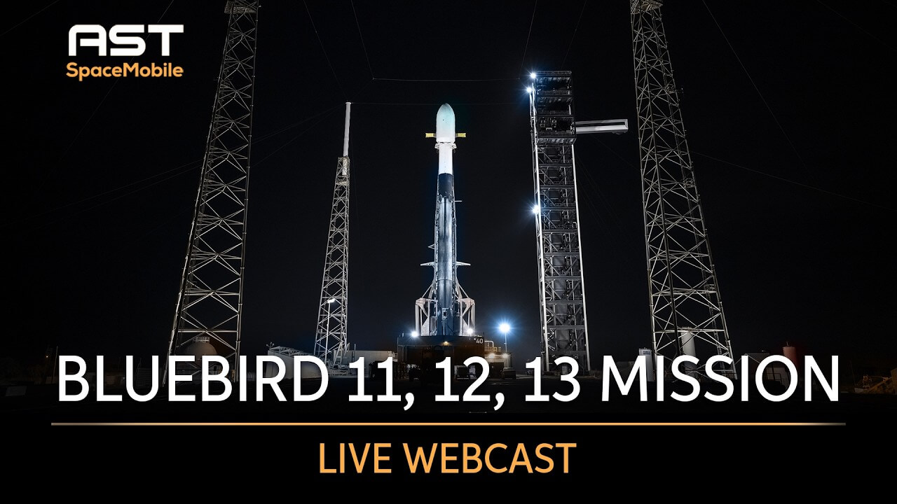

Tarif/Pricing · Global
o2 senkt Unlimited-Preis dauerhaft
o2 Deutschland erlässt Neukunden in Aktions-Tarifen die Anschlussgebühr und gewährt beim Tarif Unlimited on Demand einen dauerhaften Preisnachlass.
Tarif/Pricing · Global
o2 Deutschland erlässt Neukunden in Aktions-Tarifen die Anschlussgebühr und gewährt beim Tarif Unlimited on Demand einen dauerhaften Preisnachlass.

AST SpaceMobile · Satellit & NTN AST SpaceMobile bringt drei Satelliten für Handynetz ins All SpaceX / Starlink · Global SpaceX: 10,3 Millionen Starlink-Kunden in 164 Ländern SpaceX · Global SpaceX' Mobilfunknetz-Pläne drohen zu scheitern642 neue Meldungen gelesen, 193 davon relevant. Lesezeit etwa 13 Minuten.
SpaceX treibt seine Angriffspläne auf etablierte Mobilfunker mit Nachdruck voran: Starlink hat 12 Millionen Abonnenten und 4,3 Milliarden Dollar Umsatz erreicht, Präsidentin Shotwell kündigte offen an, mit Starlink Mobile traditionelle Anbieter attackieren zu wollen. Gleichzeitig sollen V3-Satelliten die Bandbreite verhundertfachen. Parallel formieren sich die Gegenkräfte: In Brasilien fordert Claro von der Regulierungsbehörde Anatel strenge Souveränitätsauflagen für Direct-to-Device-Dienste. In Asien bauen Betreiber ihre KI-Infrastruktur massiv aus – SK Telecoms Rechenzentrumsumsatz sprang um 92,5 Prozent, Bharti Airtel plant 1 Gigawatt Kapazität, und Indosat startete mit Nokia und Nvidia die regionale Full-Stack-Plattform Zankore. In Europa setzt Telefónica voll auf autonome Netze der Stufe 4, während die Deutsche Telekom fliegende Drohnen-Basisstationen testet. Regulatorisch zwingt die EU ab sofort alle Betreiber zu Transparenz bei KI-Einsätzen, was Bitkom und die tschechische Regulierungsbehörde ČTÚ mit Warnungen vor offenen Umsetzungsfragen begleiten.
SpaceX / Starlink - Musk targets global broadband domination (Netz/Technologie, Dringlichkeit 5/5) Elon Musk kündigte an, dass die V3-Satellitenkonstellation die gesamte gelieferte Bandbreite um das Hundertfache steigern soll. Ziel ist es, den Großteil des weltweiten Internetverkehrs zu bedienen. Quelle
Starlink (SpaceX) - Starlink Eyes Malaysia D2C Trial (Netz/Technologie, Dringlichkeit 5/5) Starlink hat den malaysischen Behörden einen Versuch mit Direct-to-Cell angeboten, um ländliche Gebiete ans Mobilnetz anzuschließen. Der Kommunikationsminister bestätigte offiziell das Interesse. Quelle
UK-MVNO-Markt - UK MVNO connections set to surge (Tarif/Pricing, Dringlichkeit 5/5) Laut einer Studie von CCS Insight werden die MVNO-Verbindungen im Vereinigten Königreich zwischen 2026 und 2031 um 51 Prozent zunehmen. Insbesondere Fintech-Marken drängen als neue Anbieter in den Markt und könnten klassische Tarifmodelle unter Druck setzen. Quelle
SpaceX - Musk's mobile network moonshot (Netz/Technologie, Dringlichkeit 5/5) SpaceX plant ein terrestrisches Kleinzellennetz, eine neue Direct-to-Device-Satellitenflotte und die Nutzung von EchoStar-Spektrum. Analysten zeigen sich jedoch skeptisch, ob der Vorstoß gegen etablierte US-Mobilfunker gelingen kann. Quelle
EU AI Act - Ab Sonntag greifen weitere Regeln (Regulierung, Dringlichkeit 5/5) Ab dem 2. August 2026 werden zentrale Transparenzanforderungen des EU AI Acts verbindlich. Bitkom warnt vor vielen offenen Umsetzungsfragen, die alle Netzbetreiber unter Zugzwang setzen. Quelle
SK Telecom - AI data center bet gains traction with 92.5% revenue growth (Netz/Technologie, Dringlichkeit 4/5) Der Umsatz von SK Telecom mit KI-Rechenzentren stieg um 92,5 Prozent. Der Konzern verfolgt eine ambitionierte Strategie mit langfristig 15 Gigawatt Infrastrukturkapazität. Quelle
Indosat Ooredoo Hutchison - Zankore Full Stack AI Infra Platform (Produktlaunch, Dringlichkeit 4/5) Indosat, Nokia und Nvidia bieten mit Zankore eine regionale KI-Plattform für Unternehmen in Südostasien an. Sie bündelt Rechenleistung und KI-Tools und zielt auf den wachsenden Markt für KI-as-a-Service. Quelle
América Móvil - Claro defende medidas de soberania nacional para D2D no Brasil (Regulierung, Dringlichkeit 4/5) In einer Konsultation der Regulierungsbehörde Anatel forderte Claro verbindliche nationale Souveränitätsstandards für Direct-to-Device-Satellitendienste. Dies könnte zum Blaupause für andere Länder werden, die den Einfluss von Starlink & Co. begrenzen wollen. Quelle
AST SpaceMobile - BlueBird 11, 12, and 13 Mission Launch (Netz/Technologie, Dringlichkeit 5/5) AST SpaceMobile hat drei weitere BlueBird-Satelliten der nächsten Generation mit einer Falcon-9-Rakete gestartet. Die Satelliten erweitern das Direct-to-Cell-Netz für direkte Handyanbindung auch in netzfernen Regionen. Quelle
Starlinks Expansion und die direkte Kampfansage an Mobilfunker prägten die Woche. Zugleich verschärften Preissenkungen von o2 in Deutschland und die ungebrochene Netzqualität von EE im UK den Wettbewerb. Hinzu kommen ein prognostizierter MVNO-Boom und ein neuer Satelliten-Konkurrent, die das Wettbewerbsumfeld weiter verdichten.
Europas Telekommunikationsbranche zeigt diese Woche deutliche Innovationskraft (fliegende Basisstationen, autonome Netze) und nutzt exklusive Sportrechte zur Kundengewinnung. Gleichzeitig zwingen Regulierer Anbieter zu Alterssperren, und Vodafone strafft sein Portfolio, während 1&1 mit Tarifänderungen Kunden verliert.
In Asien treiben Telekommunikationsanbieter KI-Infrastruktur und generative KI-Modelle für Geschäftskunden voran, während KI-Dienste spürbar das Umsatzwachstum und den ARPU steigern. Rechenzentrumskapazitäten werden massiv ausgebaut, und Partnerschaften mit Hyperscalern und KI-Firmen prägen die neue Rolle der Telcos als regionale KI-Plattformbetreiber.
Indosat Ooredoo Hutchison lancierte mit Nokia und Nvidia die Full-Stack-KI-Plattform „Zankore“, die Unternehmen in Südostasien Rechenleistung und KI-Werkzeuge als Service bereitstellt. Quelle
Rakuten Mobile integrierte das KI-Modell Claude von Anthropic in seinen Unternehmensdienst, um Firmenkunden mehr KI-Optionen und Flexibilität zu bieten. Quelle
SK Telecoms Umsatz mit KI-Rechenzentren stieg um 92,5 Prozent; der Konzern strebt eine Infrastrukturkapazität von 15 Gigawatt an und unterstreicht den aggressiven Ausbau in diesem Segment. Quelle
Bharti Airtel plant den Ausbau seiner Rechenzentrumskapazität auf 1 Gigawatt, um Cloud- und KI-Dienste zu skalieren und von der steigenden Nachfrage zu profitieren. Quelle
Update zu SoftBank: Im ersten Geschäftsquartal erzielte der Konzern einen Rekordumsatz von 1,81 Billionen Yen (+9,4 % zum Vorjahr), getragen von KI-Infrastruktur und Cloud-Diensten, die um 31 Prozent zulegten; das Unternehmen erwartet ein jährliches Wachstum von 30 Prozent in diesem Bereich. Quelle, Quelle
Chunghwa Telecom meldete ein Umsatzplus von 8,2 Prozent und einen 5G-ARPU von 569 Taiwan-Dollar (rund 16 Euro), hauptsächlich getrieben durch KI-Assistenten und Cloud-Dienste. Quelle
NTT DOCOMO BUSINESS testet mit dem chilenischen Kupferproduzenten CODELCO in einem Proof of Concept die Fernsteuerung von Minen über das optische IOWN APN, um Effizienz in der Rohstoffindustrie zu steigern. Quelle
NTT DATA brachte eine KI-Plattform für die Versicherungsbranche auf den Markt, die komplexe Arbeitsabläufe automatisiert und in wiederholbare, regelkonforme Dienste umwandelt. Quelle
Airtel führte ein kleines Sprach-KI-Modell für seine Techniker ein, um interne Prozesse effizienter zu machen und Kosten zu sparen. Quelle
SK Telecom forscht mit dem MIT Generative AI Impact Consortium an einem souveränen KI-Modell, das speziell für den Telekommunikationseinsatz entwickelt werden soll. Quelle
In Lateinamerika rüstet sich der Wettbewerb: Millicom (Tigo) erhöht nach starken Ergebnissen die Finanzprognose und schüttet eine Zwischendividende aus, während Liberty Latin America mit einem Zehnjahresvertrag seine IT-Plattform modernisiert. Gleichzeitig fordert Claro Brasilien klare Regeln für Direct-to-Device-Satellitendienste.
Millicom (Tigo) hat seine Finanzprognose für 2026 angehoben und eine Zwischendividende von 1,50 US-Dollar je Aktie erklärt, was auf gestiegene Profitabilität hindeutet. Quelle
In einer Konsultation der Regulierungsbehörde Anatel forderte Claro (América Móvil), dass Direct-to-Device-Satellitendienste (D2D) zwingend die nationale Souveränität über kritische Kommunikation sicherstellen müssen. Quelle
Liberty Latin America hat eine zehnjährige strategische Partnerschaft mit Amdocs zur Modernisierung seiner IT- und Digitalplattformen angekündigt. Die langfristige Bindung soll die Markteinführung digitaler Produkte beschleunigen. Quelle
EchoStars Satellitentochter Hughes hat Gläubigerschutz beantragt, während Charter mit einem barrierefreien Service neue Kundengruppen erschließt. Beide Schritte zeigen die aktuelle Bandbreite nordamerikanischer Marktentwicklungen.
Update zu EchoStar/DISH: Hughes Satellite beantragt Chapter 11, um milliardenschwere Schulden aus der Boost-Mobile-Übernahme und dem Druck durch Starlink zu restrukturieren. Quelle
Charter Communications stattet fast 100 Spectrum-Filialen mit virtuellen ASL-Dolmetschern aus, damit gehörlose Kunden per Video Amerikanische Gebärdensprache nutzen können. Quelle
In Afrika und dem Nahen Osten konsolidiert MTN seine Infrastruktur durch die vollständige Übernahme des Turmgeschäfts von IHS für 6,2 Milliarden US-Dollar und gewinnt so direkte Kontrolle über passive Netzinfrastruktur. Dies verschafft dem Konzern Kostenvorteile und könnte Wettbewerber wie Vodacom in überlappenden Märkten unter Druck setzen. Gleichzeitig entsteht mit einer Patentklage gegen MTN Ghana ein neuer Risikoherd für mobile Gelddienste, der auch Anbieter wie M-Pesa betreffen könnte.
In dieser Woche gab es in Ozeanien keine neuen Meldungen, die über den bereits berichteten 6G-Feldtest von Optus und Nokia hinausgehen. Der Test mit 3,5 Gbit/s im oberen 6-GHz-Band wurde bereits in einer früheren Ausgabe behandelt. Die frühe Frequenzdiskussion bleibt ein Signal, das mittelfristig beobachtet werden sollte.
Die Transparenzregeln des EU AI Act werden ab August 2026 verpflichtend – ein unmittelbarer Compliance-Termin, den Netzbetreiber jetzt einplanen müssen. Parallel melden nationale Regulierer steigende Sicherheitsvorfälle und starten neue Infrastruktur-Inventarisierungen, was den operativen Druck erhöht. Branchenpapiere loten zudem aus, wie Agentic AI das O-RAN-Netzmanagement verändern wird, während physische und Cyber-Angriffe die Aufmerksamkeit auf kritische Infrastrukturen lenken.
Weitere KI-Regeln der EU ab Sonntag verpflichtend
Ab dem 2. August 2026 werden zentrale Vorgaben des EU AI Act verbindlich, insbesondere Transparenzanforderungen für KI-Systeme. Bitkom warnt vor vielen offenen Umsetzungsfragen, die Betreiber bei Chatbots, Netzoptimierung oder Kundenservice dringend klären müssen – bei Verstößen drohen Bußgelder. Quelle
Transparenzregeln der KI-Verordnung: Frist auch in Tschechien
Der tschechische Regulierer ČTÚ erinnert daran, dass die Transparenzpflichten nach Artikel 50 des AI Act ab 2. August 2026 gelten. Unternehmen, die KI entwickeln oder nutzen, müssen die neuen Pflichten beachten, sonst riskieren sie Sanktionen und Vertrauensverluste. Quelle
ANCOM berät über Inventarisierung von Netzinfrastrukturen
Die rumänische Regulierungsbehörde ANCOM hat eine öffentliche Konsultation zur Änderung der Meldepflichten für geografische Daten öffentlicher Kommunikationsnetze und passiver Infrastruktur gestartet. Neue Regeln könnten den Bürokratieaufwand erhöhen, aber auch den Zugang zu passiven Infrastrukturen erleichtern – relevant für Glasfaserausbau und Kooperationen. Quelle
Bitkom warnt vor hybriden Angriffen auf Unternehmen
Neun von zehn Unternehmen halten eine ernsthafte Krise durch hybride Angriffe für wahrscheinlich, so eine Bitkom-Meldung. Anlass ist ein vereitelter Drohnenanschlag am Flughafen Leipzig; Betreiber kritischer Infrastrukturen müssen ihre Resilienz gegen physische und Cyber-Angriffe erhöhen. Quelle
Mehr Netzvorfälle 2025 in Rumänien, aber geringere Nutzerauswirkungen
ANCOM veröffentlichte den Bericht zu signifikanten Sicherheitsvorfällen 2025. Die Anzahl der Vorfälle stieg, doch die Effekte auf Nutzer waren milder. Betreiber in Rumänien müssen mit strengeren Meldepflichten oder Sicherheitsauflagen rechnen. Quelle
Agentic AI erfordert Evolution des SMO im O-RAN
Ein White Paper des Telecom Infra Project untersucht, wie Agentic AI das Service Management and Orchestration (SMO) im O-RAN verändern kann – etwa bei Energieoptimierung und domänenübergreifender Fehlerbehebung. Dies beeinflusst die Investitionsplanung für automatisierte Netzarchitekturen. Quelle
Tschechien schließt Konsultation zu 105–275 GHz Spektrum ab
Der ČTÚ gab bekannt, dass zur öffentlichen Konsultation für das Frequenzband 105–275 GHz keine Stellungnahmen eingingen. Dies stabilisiert die regulatorische Planung in Tschechien für künftige 6G- oder Richtfunknutzungen, auch wenn eine Kommerzialisierung noch Jahre entfernt ist. Quelle
In dieser Woche wird greifbar, wie Netzausrüster KI als neue Infrastrukturgrundlage für Betreiber positionieren. Nokia und NVIDIA bauen mit Indosat eine vollständige regionale KI-Plattform, und HPE/Juniper skizziert selbstfahrende Netze, die über einfache Automatisierung hinausgehen. Beides zeigt: Ausrüster entwickeln sich zu Anbietern von KI-fähigen Betriebsmodellen, die Betreibern neue Dienste ermöglichen.
Indosat, Ooredoo Group, Nokia und NVIDIA haben die KI-Infrastrukturplattform Zankore gestartet. Sie stellt Betreibern im asiatisch-pazifischen Raum eine komplette KI-Umgebung als Service bereit – ein Blaupause-taugliches Modell für regionale KI-Angebote mit etablierten Partnern. Quelle
HPE (Juniper) beschreibt selbstfahrende Netze als nächste Evolutionsstufe: Statt vordefinierter Automatisierung sollen Netze künftig KI-gestützt eigenständig optimieren. Das deutet auf eine Produkt-Roadmap, die autonomes Netzmanagement ins Zentrum rückt. Quelle
In der Chips- und Modembranche blieb es diese Woche ruhig. Marketingbeiträge von Arm zu Arm-basierten CPUs in Hyperscale-Rechenzentren dominierten die Berichterstattung, haben aber für Netzbetreiber keine unmittelbare Bedeutung. Die einzige operativ relevante Meldung sind die vorläufigen Zahlen von Sequans, einem bedeutenden Anbieter von 5G/4G-IoT-Chipsätzen. Sequans hat ungeprüfte Finanzergebnisse für das am 30. Juni 2026 beendete Quartal vorgelegt. Die finanzielle Entwicklung dieses Chipsatzlieferanten kann Lieferketten und Kosten für IoT-Angebote der Netzbetreiber beeinflussen. Quelle
Die Verschmelzung von Satelliten‑ und Mobilfunknetzen nimmt Fahrt auf. AST SpaceMobile hat erneut Satelliten ins All gebracht, die direkt mit herkömmlichen Handys kommunizieren. Das lässt zeitnah flächendeckende Satellitenanbindung erwarten – neue Roaming- und Abdeckungsoptionen für Netzbetreiber werden greifbar.
NVIDIA kündigt zusammen mit Partnern Investitionen in den Aufbau US-amerikanischer KI-Produktionskapazitäten an – von Fertigung über Lieferketten bis zu Energienetzen und Fachkräften. Der Schritt unterstreicht die zunehmende Verlagerung strategischer Infrastruktur in die Heimatmärkte, bleibt für europäische Netzbetreiber kurzfristig aber ohne direkte Relevanz.
NVIDIA beteiligt sich mit Partnern an Investitionen in US-Fertigung, Lieferketten und Energienetze, um die heimische KI-Produktion zu stärken, ohne konkrete Zahlen zu nennen. Quelle
Satelliten greifen Mobilfunker direkt an – und stoßen auf Gegenwehr SpaceX kündigt offen den Angriff auf traditionelle Mobilfunker an, Malaysia prüft einen D2C-Versuch von Starlink, und AST SpaceMobile startet drei weitere Direct-to-Cell-Satelliten. Gleichzeitig fordert Claro in Brasilien strenge Souveränitätsauflagen – ein Muster, das zeigt, wie Regulierer weltweit auf die neue Konkurrenz aus dem All reagieren werden.
KI-Infrastruktur wird zum neuen Kerngeschäft der Telkos SK Telecom verzeichnet 92,5 Prozent Umsatzwachstum mit KI-Rechenzentren, Bharti Airtel plant 1 Gigawatt Kapazität, und Indosat startet mit Nokia und Nvidia eine regionale KI-Plattform. Telkos positionieren sich damit über ihr angestammtes Konnektivitätsgeschäft hinaus als Anbieter von KI-Rechenleistung.
Autonome Netze erreichen die nächste Stufe Telefónica treibt Level-4-autonome Netze voran, und HPE (Juniper) erklärt klassische Automatisierung für veraltet und setzt auf selbstfahrende Netze. Das Telecom Infra Project untersucht, wie agentische KI das O-RAN-Netzmanagement verändern kann. Der Trend geht von reiner Automatisierung hin zu KI-gestützter Eigenoptimierung.
Die drei Anbieter, gegen die Vodafone Deutschland direkt antritt
Deutsche Telekom wächst im ersten Halbjahr 2026 stark, getrieben von T-Mobile US und einem Rekordzuwachs von 1 Million TV-Kunden dank exklusiver FIFA-WM-Übertragungen. Der Konzernumsatz erreichte 59,8 Milliarden Euro (+2,4 %), die Prognose für den Free Cashflow wurde angehoben und das Aktienrückkaufprogramm um bis zu 3 Milliarden Euro aufgestockt. Technologisch testet DT fliegende Drohnen-Basisstationen für unterbrechungsfreie Mobilfunkabdeckung und setzt weiter auf 5G- und Glasfaserausbau. Im Heimatmarkt Deutschland treibt vor allem das Mobilfunkgeschäft das Wachstum. Diese Stärke signalisiert aggressive finanzielle und technologische Spielräume.
Aktuelle Moves
Für Telefónica / O2 und 1&1 hat die Auswertung dieses Laufs keine Antwort geliefert (2 von 3 Profilen). Der Fehler steht im Laufprotokoll unter Quellen.